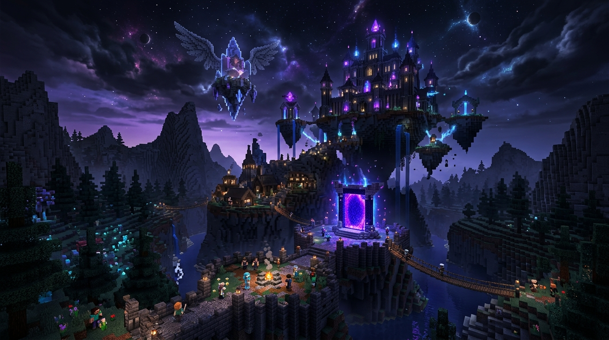
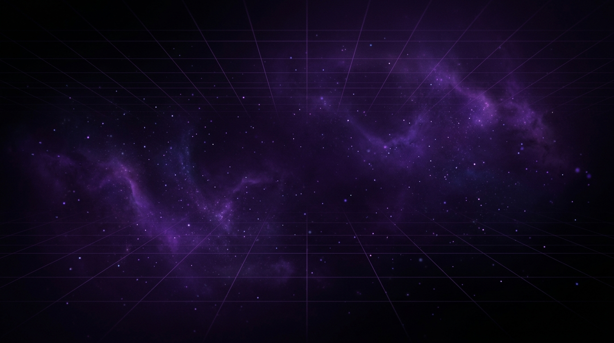

Información General

Bienvenido al Servidor
Angel's Wans es el lugar perfecto para vivir aventuras épicas. Una comunidad unida donde la supervivencia y la diversión van de la mano.
Conéctate, explora mapas únicos y forma tu equipo para dominar el mundo.
Modalidades
›

Múltiples Formas de Jugar
Encuentra tu estilo ideal: desde Survival clásico para recolectar recursos y construir tu imperio, hasta Minijuegos competitivos para demostrar tu habilidad.
Eventos semanales, economía balanceada y soporte continuo.